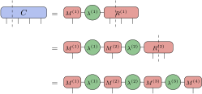
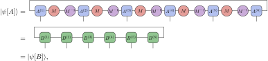
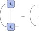
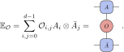
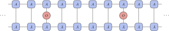

7. Matrix Product States#
Having introduced tensor network states in general in the previous section, we now turn to the specific case of a single spatial dimension. In this setting we will discuss matrix product states and their properties.
7.1. A Matrix Product State#
We work in the same setting as the section on tensor network states, where now our physical spins of local physical dimension \(d\) are laid out on a linear chain with \(N\) sites. As before, we can decompose the full tensor of coefficients \(C\) of a given quantum state \(\ket{\psi}\)
into a network of local tensors by consecutive SVDs, where each time we only keep some suitable number of singular values \(D_i\) for every cut. For the case of \(N=4\) we can explicitly carry out this full procedure in the following way:
{kind=link}
Absorbing the bond tensors \(\lambda^{(i)}\) into the neighboring site tensor we end up with a matrix product state (MPS),
{kind=link}
Once again, the horizontal edges connecting the different site tensors are called virtual bonds and the dimension \(D_i\) of these bonds is called the bond dimension. This bond dimension controls the precision of our low-rank approximation, where in the limit of increasing bond dimension an MPS can approximate any quantum state to arbitrary precision. However, in accordance with our previous discussion we expect to be able to describe low-energy states of local Hamiltonians using a maximal bond dimension \(D\) that scales with the boundary of the system, which in one dimension is just constant in the system size.
To see where the ‘matrix product’ in the name comes from, we can write out such a state in a more explicit form as
Interpreting the \(A_{s_i}^{(i)}\) as \(D \times D\) matrices, we indeed recognize that the corresponding coefficient in the computational basis is given by their matrix product. This becomes even more explicit if we consider periodic boundary conditions \(N \sim 1\), where we can write a corresponding MPS
{kind=link}
as
This class of states can be used as a variational anzatz to for example perform time evolution or find ground states within the manifold of MPS of a given bond dimension \(D\). Before moving on to MPS algorithms, we first summarize some of the key properties that make these states so easy to work with.
Note
Alternatively, one could introduce MPS as a so-called projected entangled-pair state (PEPS) in the following way. Consider again our chain of length \(N\), where we now place two ancillary spins of dimension \(D\) on every site. We then maximally entangle each of these ancillary spins with the corresponding spin on the neighboring site, resulting in a chain of entangled pairs of the form \(\ket{\phi}=\sum_{j=0}^{d-1}\ket{j,j}\). Finally, we project the two spins at each site onto the local physical Hilbert space of dimension \(d\), resulting in a state

If we write the projectors \(\mathcal P^{(i)}: \mathbb {C}^D \otimes \mathbb{C}^D \rightarrow \mathbb{C}^d\) as
you should be able to see that the resulting state is precisely an MPS with tensors \(A^{(i)}\). This construction originates from ideas in quantum information theory regarding entanglement and teleportation. While it may seem a bit involved, this construction has a very natural generalization to two and more spatial dimensions, where it has been put to extensive use.
7.2. Entanglement in MPS#
As a first property we study the entanglement structure of an MPS. Consider an MPS with a fixed bond dimension \(D\). We can choose any bond of the MPS to make a bipartition of the system, where all sites to the left of the bond belong to one subsystem and all sites to the right of the bond belong to the other subsystem. Performing an SVD across this bond, just as we have done in our initial construction, gives us a corresponding set of singular values \(s_i\). As we have seen before, the squares of these singular values are the Schmidt coefficients of the bipartition, and make up the entanglement spectrum of the MPS. The entanglement spectrum of a given low-energy state encodes many interesting properties of the corresponding system, and can for example be used to recognize symmetries and detect phase transitions.
The same Schmidt coefficients can be used to compute the bipartite entanglement entropy across the cut as
For one-dimensional states which obey an area law, the maximum entropy across a cut is bounded by a constant. Again we see that by increasing the bond dimension sufficiently, we will always be able to saturate this value of \(S\), confirming our previous statement that MPS faithfully capture these states. Furthermore, even for states that do not satisfy an area law, such as critical states, carefully relating entanglement properties such as the entanglement entropy to the correlation length (which are then both controlled by the bond dimension) allows to derive many key properties of the critical system.
7.3. Gauge Freedom#
Not all MPS describe different physical states. One can perform a set of transformations on an MPS to change the local tensors, but that leave the physical state unchanged. These transformations are called gauge transformations. The freedom to choose a particular MPS representation when describing a given physical state is also called a gauge freedom. The gauge transformations that leave an MPS invariant are given by basis transforms on the virtual level. Given such a basis transform \(M\) as a \(D\times D\) invertible matrix, it is easy to see that the following procedure relates two different MPS which encode the same physical state,
{kind=link}
where the \(B^{(i)}\) tensors are obtained by absorbing \(M^{-1}\) and \(M\) on the left and right virtual index of \(A^{(i)}\) respectively.
Since a physical state can be described by many different MPS by virtue of the gauge freedom, one can wonder if the same state can be described by two MPS that are not related by a gauge transform. This question is answered by the fundamental theorem of MPS, which states that any two translationally invariant MPS are equal if and only if their tensors are related by a gauge transform. So the gauge freedom is the only freedom we have in describing a physical state by an MPS.
From a more practical point of view, this gauge freedom is exploited in various algorithms by making use of so-called canonical forms. One common canonical form for example is the left-canonical form, where we gauge transform a given MPS tensor \(A\) to a different tenor \(A_L\) which satisfies the condition \(\sum_{s_i=0}^{d-1}(A_L)^\dagger_{s_i}(A_L)_{s_i} = \mathbb 1_{D\times D}\), or in pictures,
{kind=link}
A similar form can be imposed to obtain the right-canonical form in a finite MPS, we can bring the tensors in left- or right canonical form as we wish by factorizing them into appropriate isometries using the QR or polar decomposition. This moving of the gauge center has proved essential in finite MPS algorithms, as we will see later.
7.4. Expectation Values#
Another key feature of MPS is that expectation values of local operators can be computed efficiently. Consider an operator \(O_i\) acting on site \(i\) of a state given by an MPS \(\ket{\psi[A]}\). To calculate this expectation value we introduce the object
{kind=link}
which we will call the \(O\)-transfer matrix. In the case of \(O=\mathbb 1\) we just call it the transfer matrix. For a finite MPS with periodic boundary conditions, this can be written succinctly as
This quantity can be evaluated efficiently by contracting the corresponding diagram from end to end.
7.5. Correlation Functions#
The method to calculate expectation values can be easily generalized to calculate two-point correlation functions of an MPS. Consider two operators \(O_i\) and \(Q_j\) each acting on respectively site \(i\) and \(j\). The correlator between these two operators is denoted by \(\braket{\psi|O_i O_j|\psi}\), and corresponds to the contraction
{kind=link}
Adopting the transfer matrix notation this becomes
The dependence of the correlator on \(i\) and \(j\), for large separations between the two, is dominated by the factor \(\mathbb{E}\), taken to some large power. This operator is in fact a completely positive map (CP map), and one can always normalize the state \(\ket{\psi}\) such that the dominant eigenvalue of \(\mathbb{E}\) is 1 and the others lie within the unit disk. Making use of the spectral decomposition, we can show that the exponential dependence on the eigenvalues corresponds to an exponential decay in the correlation functions, meaning that an MPS always has exponentially decaying correlations. We will return to this point in more detail when considering infinite systems in the next section.
7.6. Code Example: MPSKit.FiniteMPS#
To be added.